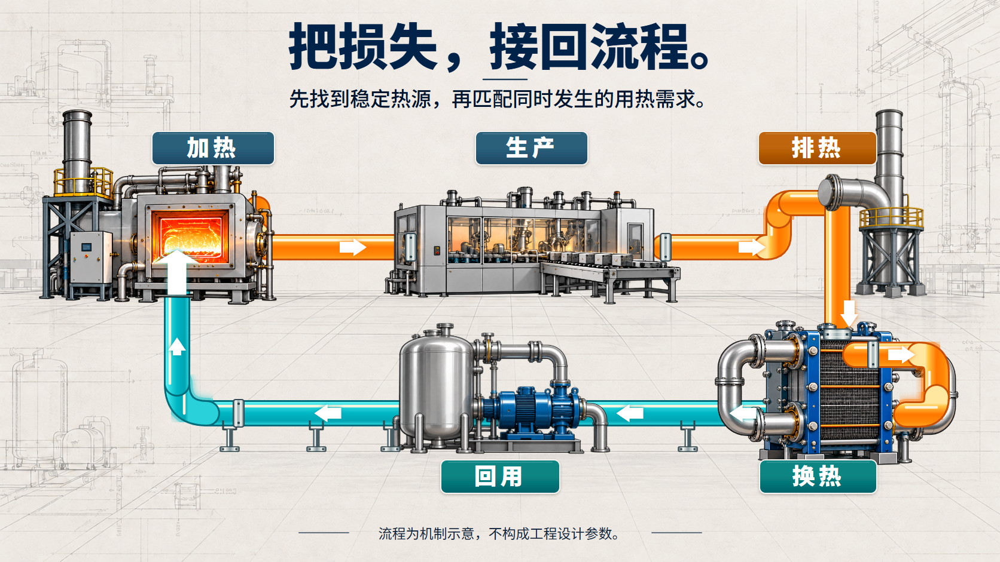

RESEARCH / 6 PAGES

科研汇报
研究问题、证据层次、方法与验证计划。
完整页面概念、独立素材与自动组装是三种选择。让行业、任务和信息决定画面，用真实预览看设计效果。

六行业覆盖科研、科技、制造、教育、品牌和公共服务。整套包含逐页概念、提示词、来源及下载包。
研究问题、证据层次、方法与验证计划。

热源、回用关系与实施边界。

学习任务、活动安排与成果表达。

产品、材质与生活情境。
大创覆盖立项、过程和结题，同一虚构项目贯穿三套演示；另有科技创新作品答辩与创新创业路演。
问题、目标、方法、条件与实施计划。
目标完成度、材料、贡献与限制。
每一页设计完整，保留提示词与来源，到此可以交付。
按需拆出透明对象、背景、字形、SVG和文字源。全页素材从空白重建验证覆盖。
普通文字和数据按需求保留原生编辑能力；核对实际PPTX渲染与承诺的编辑操作。
三页重建样例把66个对象分别保留。可以逐层隐藏、显示、叠加原概念，查看透明组件在浅/深底的边缘；同时提供PowerPoint实际渲染与独立重建试验。

所有项目、产品、进度与数据均为明确标注的示例；完整行业和竞赛套组交付到概念模式。PPTX重建试验存在生成式细节、材质和字体差异，不承诺逐像素一致，未记录用户对当前PPTX的视觉接受。代理检查、技术检查与真实用户反馈分别保留。